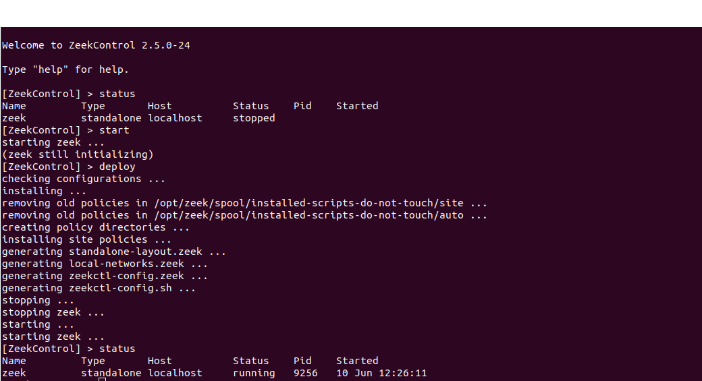
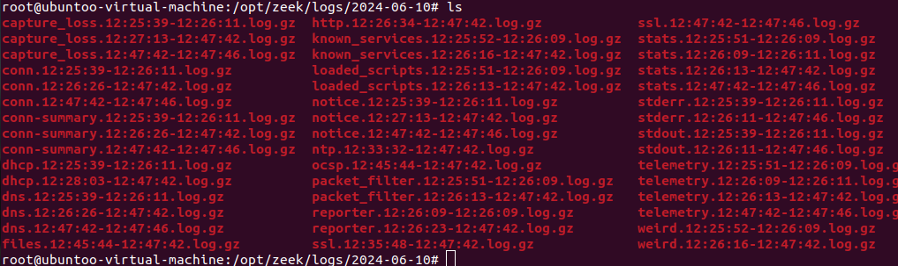

Analyzing Traffic with Zeek Sensor
In this lab, we will be running the Zeek sensor to analyze network traffic and gain a better understanding of what is happening in the network environment.
To analyze network traffic using Zeek on your current device, follow these steps:
Change Privileges:
First, switch to the root user to ensure you have the necessary permissions.
sudo -sNavigate to Zeek Directory:
Change your directory to where Zeek is installed.
cd /opt/zeek/bin
Start Zeek Control:
Use the
zeekctlcommand to open Zeek Control and start the Zeek processes../zeekctl
Zeek Control will open, and you can start and manage Zeek from there.
By following these steps, you will have Zeek running on your system, ready to capture and analyze network traffic. This setup is essential for monitoring your network and detecting any suspicious activities or threats.
Stopping Zeek Control:
Once you have collected enough data or completed your analysis, you can stop Zeek Control using the following command:
./zeekctl stopAfter stopping Zeek Control, navigate to the logs directory to check your latest log files. Reviewing these logs is crucial to understanding the network activity and identifying any potential anomalies.
Viewing Log Files:
To view the generated log files, you can use the
lesscommand. For example:less -S conn.log
Replace
conn.logwith the name of the log file you want to inspect. Using the-Soption withlessallows you to scroll horizontally, making it easier to view the log file’s content.Open each log file one by one to examine the details. Pay close attention to any anomalies or unusual patterns in the traffic. Zeek’s logs provide comprehensive information, including connection details, HTTP requests, DNS queries, and more.
Identifying Anomalies:
Analyzing the logs will help you identify any suspicious activities or anomalies. Look for unusual patterns, unexpected connections, or any deviations from normal network behavior. These could indicate potential security threats or malicious activities.
By following these steps and thoroughly analyzing the log files, you can effectively monitor your network and detect any suspicious activities. Regular analysis of network traffic with Zeek helps maintain a secure and resilient network environment.